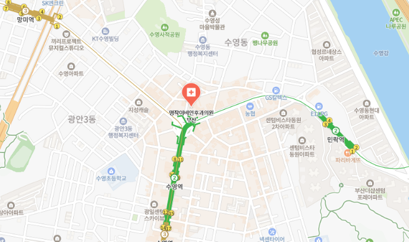

진료시간 및 오시는 길
Masterpiece Contact
부산 수영구 수영로 693, BNK 수영타워 8층
(수영역 1번 출구 앞)
051.977.8000
평일
AM 09:00 - PM 06:00
토요일
AM 09:00 - PM 01:00
점심시간
PM 12:30 - PM 02:00
토요일 점심시간 없이 진료 / 일요일 공휴일 휴진

지하철 이용 시
버스 이용 시

자차 이용 시
부산은행 수영타워 지하 주차장 이용 가능